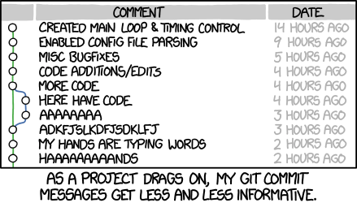
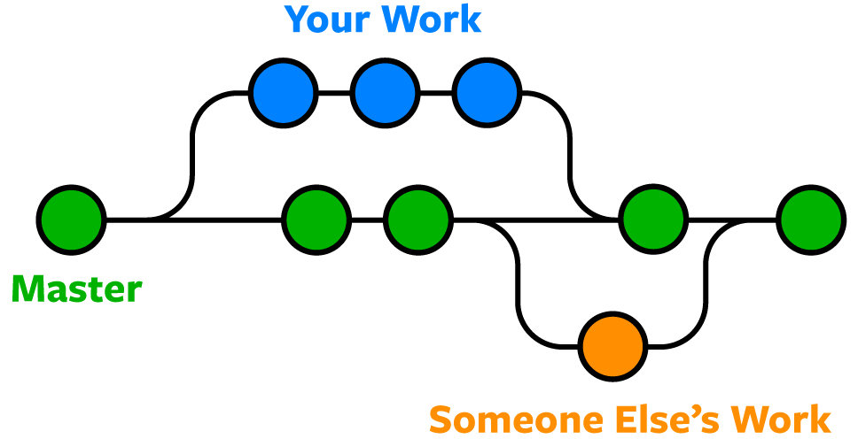
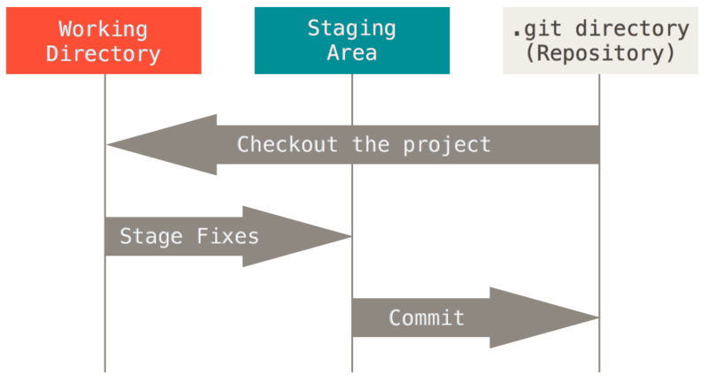
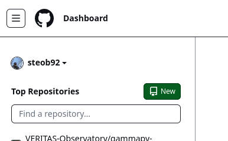
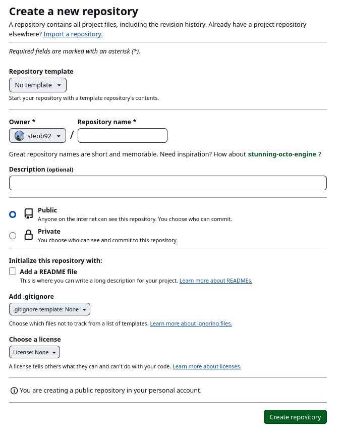
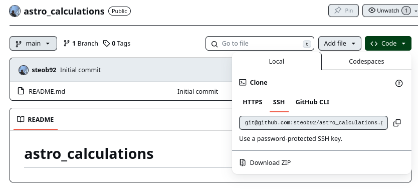
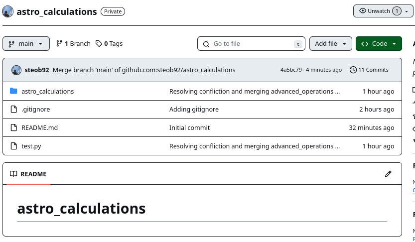

Git 1
About
In this tutorial we will, we cover the very basics of Git. Git is a "free and open source" (FOSS) "distributed version control" system. Let's dissect what "distributed version control" means.
Version Control
Version control is a method to keep track of the history of a code base.
We can think of this as a list of changes between versions of files from one code version to the next.
When working with a version of a code base, we will modify individual files within the code base.
When we are happy with the new versions of the files, we can commit the changes made, along with a helpful message describing the changes.

Informative commit messages help identify changes form the previous commit.
This provides useful information when trying to debug issues with the code and identifying significant changes.
Knowing the "history" of the code, we can revert to a previous version of the code (or a previous version of a specific file).
This can help to resolve issues in a code base.
Aside on version numbers
For example, if version 1.0.0 had a function with an expensive run time (my_func()).
def my_func(x):
sleep(10)
return x[0] + x[1]
We changed the function to reduce the run time by changing how some calculation is done, we would commit a message like "implemented faster calculation method for my_func".
def my_func(x):
return x[0] + x[1]
commit-ing we may decide to increment the version number to 1.1.0.
Here we changed the second digit.
This specifices that there has been a minor change to the code.
After some testing of the code, we now know that the new method introduced an error in the calculation, luckily there is a quick fix.
def my_func(x):
return np.sqrt(x[0]**2 + x[1]**2)
commit the modifed code with a message "resolved bug introduced in v1.1.0 for my_func".
With this bug resolved, we now decide to increment the versiion number to 1.1.1.
Here we changed the final digit, this tells the user that going from 1.1.0 to 1.1.1 is a bug fix.
After some redesign of our code, we then decide that the my_func function needs a more informative name.
So we change the name from my_func to calculate_distance, and commit the changes with the message "changing my_func name to calculate_distance to improve readabiltiy".
def calculate_distance(x):
return np.sqrt(x[0]**2 + x[1]**2)
Changing the function name would be "API breaking" meaning that code relying on version 1.1.1 will no longer work on the current version. For this reason we would call the version 2.0.0. Here incrementing the first digit tells the user that it is nolonger compatable with version 1.x.y.
...
values = [6.28, 3.14]
# Workds with v1.* but not v2.*
distance = my_func(values)
# Workds with v2.* but not with v1.*
distance = calculate_distance(values)
This is known as Semantic Versioning. Under this convention versions are named using 3 digits (version a.b.c): * a: Major version number (when the API changes) * b: Minor version number (when functionality changes in a backwards compatable way) * c: Patch version number (when bug fixes are added in a backwards compatiable way)
It's also common to see x.y.z.-alpha, x.y.z-beta or x.y.z-rc. Here the developers have frozen development for the future x.y.z release, with any further major/minor changes to be included in a future version. alpha/beta refer to testing versions with an alpha typically an initial test version open to a small set of interal collaborators, beta refering to a more open or second round of testing which is open to the public. rc would refer to a "release candidate". A rc version would be used for final tests of the full x.y.z version before making it available. The differences between x.y.z-rc and x.y.z would only reflect bug fixes found during final testing of the x.y.z-rc branch.
See this post for a discussion of different versioning schemes.
Distributed Version Control
Distributed version control allows for the entire codebase to be mirrored on every developer's machine, rather than a single location.
This prevents the codebase from being destroyed either due to a disk failure or by local changes.
With distributed version control, multiple developers can work on a single code base without conflicting with other developers' work.
Git allows for remote developers to change code and commit the code to remote repository (e.g. GitHub), by push-ing their changes.
Git allows for branch-es.
These are parallel instances of the codebase, which allow for independent development without interfering with other branches.

It is common practice to maintain a main or master branch.
This branch reflects the most up to date, yet stable, version of the code.
When someone wants to develop a new feature, they will branch out from the main branch to create what might be referred to as a "feature" branch.
With this branch the developer will make the required changes and run tests.
Once they're happy with the changes, they will then merge their code into the main branch.
It is common for integration tests to be passed before allowing anything to be merged into the main branch.
Using Git
Let create a small project to illustrate how to use git.
» tree [11:05:58]
.
├── astro_calculations
│ ├── __init__.py
│ └── math_operations.py
└── test.py
Here we have a simple python package called astro_calculations. The folder astro_calculations includes two files math_operations.py, which defines the functions:
| math_operations.py | |
|---|---|
1 2 3 4 5 6 7 8 9 10 11 | |
and __init__.py which imports the functions and specifies the __all__ list:
| __init__.py | |
|---|---|
1 2 3 | |
__all__ is a special variable in python which defines a list of what is imported when running from package import *.
We also have a test.py file:
| test.py | |
|---|---|
1 2 3 4 5 6 7 8 9 10 | |
This defines a set of tests we can use to ensure the correct behavior of the code.
Creating a new repository
We can create a new repository for the existing astro_calculation codebase by running:
git init
From within the project directory. This provides the following output:
git init [11:13:43]
hint: Using 'master' as the name for the initial branch. This default branch name
hint: is subject to change. To configure the initial branch name to use in all
hint: of your new repositories, which will suppress this warning, call:
hint:
hint: git config --global init.defaultBranch <name>
hint:
hint: Names commonly chosen instead of 'master' are 'main', 'trunk' and
hint: 'development'. The just-created branch can be renamed via this command:
hint:
hint: git branch -m <name>
Initialized empty Git repository in /raid/RAID1/Tutorials/git-tutorial/.git/
This also creates a .git folder within the directory.
The .git folder is the "repository".
This folder contains history of the codebase, by tracking changes made to files.
If one deletes the .git folder, one deletes the history of the codebase (or at least the local copy of it).
With access to the .git folder, a developer can see what has been changed across the entire history of the code, revert to previous versions of the code, check out tagged versions of the code, swap to a different branch of the code and access many other features.
For now, we'll ignore the .git folder and its contents.
The staging area
Git uses a "staging area" to prepare changes to the codebase to be committed.

After files are modified, we can specify which files are set to be committed by adding them to the staging area.
Once we are happy with the files to be committed, we can then commit these changes to the repository (the .git folder).
We can see the current status of the repo using:
git status
astro_calculations example, this yields:
1 2 3 4 5 6 7 8 9 10 | |
master.
On line 3 it says that we have no commits
On lines 5-8 we have a list of untracked files.
Untracked files are files which are not being tracked by the fit repo.
From the above, we see that we can use git add <file> to add a file or change to a file, to be committed.
We can add all files that have been checked to the commit using git add . .
We can add astro_calculations folder and test.py file to the "staging area" with:
git add test.py astro_calculations/
Rerunning git status we get:
1 2 3 4 5 6 7 8 9 | |
astro_calculations/__init__.py, astro_calculations/math_operations.py and test.py have been added to the staging area.
The changes to these files haven't yet been committed to the repo.
To commit changes we use:
git commit -m "message"
git commit -m "Adding initial code to the repo"
[master (root-commit) 38e2d00] Adding initial code to the repo
3 files changed, 24 insertions(+)
create mode 100644 astro_calculations/__init__.py
create mode 100644 astro_calculations/math_operations.py
create mode 100644 test.py
create mode.
This tells the repo that new files have been "created".
Let's make a change to astro_calculations/math_operations.py to include a modulo function:
| math_operations.py | |
|---|---|
13 14 | |
Running git status we can see that changes to the file have been detected:
On branch master
Changes not staged for commit:
(use "git add <file>..." to update what will be committed)
(use "git restore <file>..." to discard changes in working directory)
modified: astro_calculations/math_operations.py
no changes added to commit (use "git add" and/or "git commit -a")
astro_calculations/math_operations.py have been modified, but not yet added to the staging area.
Difference between commits git diff
Let's use git diff to see what has been changed in astro_calculations/math_operations.py.
git diff astro_calculations/math_operations.py
diff --git a/astro_calculations/math_operations.py b/astro_calculations/math_operations.py
index fcfdc03..75e7956 100644
--- a/astro_calculations/math_operations.py
+++ b/astro_calculations/math_operations.py
@@ -9,3 +9,6 @@ def mult(a,b):
def div(a,b):
return a / b
+
+def modulo(a,b):
+ return a % b
This shows the diff between the current version of the file and the version last committed to the repo.
We can add the file to the staging area:
git add astro_calculations/math_operations.py
And rerun git status to see:
On branch master
Changes to be committed:
(use "git restore --staged <file>..." to unstage)
modified: astro_calculations/math_operations.py
We can commit the change with a useful message:
git commit -m "Adding modulo function"
Understanding Histories of files (git log)
Git stores the history of a file by tracking the lines that have changed from one commit to the next, rather than storing multiple copies of the same file.
In terms of storage, this provides a light-weight method to store long histories.
We can inspect the history of files and repos using the git log command.
Running git log will show the previous commits of the repo, for example:
1 2 3 4 5 6 7 8 9 10 11 | |
On line 1 we can see the id for the most recent commit, on line 2 we see the author of that commit, with the date of line 3. On line 5 we see the commit message. In the above example we only have two commits. Let's add a new file:
| astro_calculations/printing.py | |
|---|---|
1 2 | |
from astro_calculations import *:
```python title="astro_calculations/init.py" linenums="1" hl_lines="2,3"
from .math_operations import add, sub, mult, div
from .printing import print_details
all = ["add", "sub", "mult", "div", "print_details"]
Add these to the staging area :
```bash
git add astro_calculations/__init__.py astro_calculations/printing.py
$ git status
On branch master
Changes to be committed:
(use "git restore --staged <file>..." to unstage)
modified: astro_calculations/__init__.py
new file: astro_calculations/printing.py
git commit -m "Adding printing function"
[master d38bd2d] Adding printing function
2 files changed, 4 insertions(+), 2 deletions(-)
create mode 100644 astro_calculations/printing.py
This says that we have modified two files, one of which was newly created. Note that it records "insertions" and "deletions" to the files.
Running git log we can see our new commit:
commit d38bd2de7b4be9b7ccc843889d1894da96e68a00 (HEAD -> master)
Author: Ste O Brien <stephan.obrien@mcgill.ca>
Date: Fri Jan 26 13:12:47 2024 -0500
Adding printing function
commit 4bbbf9e19f3d4f6d067ca04258e2f72e342c8e42
Author: Ste O Brien <stephan.obrien@mcgill.ca>
Date: Fri Jan 26 12:05:25 2024 -0500
Adding modulo function
commit 38e2d008831daaaeadcf6466dbe1a375f6cfbc1b
Author: Ste O Brien <stephan.obrien@mcgill.ca>
Date: Fri Jan 26 11:50:29 2024 -0500
Adding initial code to the repo
We can also check the log of an individual file using:
git log astro_calculations/math_operations.py
commit 4bbbf9e19f3d4f6d067ca04258e2f72e342c8e42
Author: Ste O Brien <stephan.obrien@mcgill.ca>
Date: Fri Jan 26 12:05:25 2024 -0500
Adding modulo function
commit 38e2d008831daaaeadcf6466dbe1a375f6cfbc1b
Author: Ste O Brien <stephan.obrien@mcgill.ca>
Date: Fri Jan 26 11:50:29 2024 -0500
Adding initial code to the repo
(END)
Recall we've only changed astro_calculations/math_operations.py once since the initial commit.
The most recent commit, where we added the printing function, isn't included in this file's history.
Since the file hasn't changed, there is no need to record any difference to the file.
If we want to see a more detailed log, we can pass a -p flag to git log:
git log -p astro_calculations/math_operations.py
commit 4bbbf9e19f3d4f6d067ca04258e2f72e342c8e42
Author: Ste O Brien <stephan.obrien@mcgill.ca>
Date: Fri Jan 26 12:05:25 2024 -0500
Adding modulo function
diff --git a/astro_calculations/math_operations.py b/astro_calculations/math_operations.py
index fcfdc03..259f48e 100644
--- a/astro_calculations/math_operations.py
+++ b/astro_calculations/math_operations.py
@@ -9,3 +9,6 @@ def mult(a,b):
def div(a,b):
return a / b
+
+def modulo(a,b):
+ return a % b
commit 38e2d008831daaaeadcf6466dbe1a375f6cfbc1b
Author: Ste O Brien <stephan.obrien@mcgill.ca>
Date: Fri Jan 26 11:50:29 2024 -0500
Adding initial code to the repo
diff --git a/astro_calculations/math_operations.py b/astro_calculations/math_operations.py
new file mode 100644
index 0000000..fcfdc03
--- /dev/null
+++ b/astro_calculations/math_operations.py
@@ -0,0 +1,11 @@
+def add(a, b):
+ return a + b
+
+def sub(a,b):
+ return a - b
+
+def mult(a,b):
+ return a * b
+
+def div(a,b):
+ return a / b
Viewing different version of the code
We can use the git checkout command to view different version of the code.
This is a versatile command, for the moment let's use it to view a previous version of the codebase.
Use git log to view the previous commits:
commit d38bd2de7b4be9b7ccc843889d1894da96e68a00 (HEAD -> master)
Author: Ste O'Brien <stephan.obrien@mcgill.ca>
Date: Fri Jan 26 13:12:47 2024 -0500
Adding printing function
commit 4bbbf9e19f3d4f6d067ca04258e2f72e342c8e42
Author: Ste O'Brien <stephan.obrien@mcgill.ca>
Date: Fri Jan 26 12:05:25 2024 -0500
Adding modulo function
commit 38e2d008831daaaeadcf6466dbe1a375f6cfbc1b
Author: Ste O'Brien <stephan.obrien@mcgill.ca>
Date: Fri Jan 26 11:50:29 2024 -0500
Adding initial code to the repo
Lets checkout the version of the code prior to adding the printing function 4bbbf9e19f3d4f6d067ca04258e2f72e342c8e42:
git checkout 4bbbf9e19f3d4f6d067ca04258e2f72e342c8e42
Note: switching to '4bbbf9e19f3d4f6d067ca04258e2f72e342c8e42'.
You are in 'detached HEAD' state. You can look around, make experimental
changes and commit them, and you can discard any commits you make in this
state without impacting any branches by switching back to a branch.
If you want to create a new branch to retain commits you create, you may
do so (now or later) by using -c with the switch command. Example:
git switch -c <new-branch-name>
Or undo this operation with:
git switch -
Turn off this advice by setting config variable advice.detachedHead to false
HEAD is now at 4bbbf9e Adding modulo function
We can see that astro_calculations/printing.py is no longer in our directory:
tree [13:47:40]
.
├── astro_calculations
│ ├── __init__.py
│ └── math_operations.py
└── test.py
We can switch back to the main branch using git switch -:
git switch -
Previous HEAD position was 4bbbf9e Adding modulo function
Switched to branch 'master'
Reverting individual files
Let's say we've made some changes to a file and prematurely committed the file. We might see something like this:
On branch master
Changes to be committed:
(use "git restore --staged <file>..." to unstage)
modified: astro_calculations/math_operations.py
We can remove the file from the staging area using:
git restore --staged astro_calculations/math_operations.py
This file is now marked as modified but not staged:
On branch master
Changes not staged for commit:
(use "git add <file>..." to update what will be committed)
(use "git restore <file>..." to discard changes in working directory)
modified: astro_calculations/math_operations.py
We note that the file is still modified. If we wanted to undo these changes and revert to the current version in the master branch we could run:
git checkout master -- astro_calculations/math_operations.py
master branch version of astro_calculations/math_operations.py.
Let's say we now know that there was a bug introduced in one of the previous commits. We can access the previous version of the file, prior to that commit by first looking at the log of the file:
git log -p astro_calculations/math_operations.py
38e2d008831daaaeadcf6466dbe1a375f6cfbc1b. To revert the file back to this commit:
git checkout 38e2d008831daaaeadcf6466dbe1a375f6cfbc1b -- astro_calculations/math_operations.py
We will now see the original version of the file, and the file will be listed as modified when running git status. We can commit this as we would any other change to the code git add astro_calculations/math_operations.py.
Gitignore
You might have noticed that if you've tried to run the python code then a astro_calculations/__pycache__/ directory was created.
Running git status you might see:
Untracked files:
(use "git add <file>..." to include in what will be committed)
astro_calculations/__pycache__/
This directory contains the precompiled python code. When we create a python module, it can be precompiled rather than compiled at run time. This helps to improve the performance of the code.
We don't want this precompiled byte code to be committed or tracked.
We can exclude files using a .gitignore file.
A file which starts with a . will typically be hidden from file browsers and ls.
Git will look for the .gitignore file to define what files should be excluded when monitoring the codebase.
Create a file in the root directory of the repository and add the following lines:
# Byte-compiled / optimized / DLL files
__pycache__/
*.py[cod]
This will exclude any directory with the name __pycache__ and any files ending in .pyc, .pyo or .pyd.
These are suffices created when compiling python code.
If we rerun git status we see:
Untracked files:
(use "git add <file>..." to include in what will be committed)
.gitignore
nothing added to commit but untracked files present (use "git add" to track)
.gitignore file and knows to exclude the astro_calculations/__pycache__/ directory because it has the __pycache__ pattern.
We should add and commit the .gitignore file.
As the project gets more complicated we might want to add additional patterns to this file.
Standard .gitignore files can be found here.
Branching
Git uses branch-es to allow the codebase to be modified without affecting the current state of the branch.
When branching we take an instance of one branch of the code (for example the master or main branch), and spawn a copy of that branch that where we will develop the code further.
This is particularly useful when developing and testing new features of the code base without disrupting the codebase for other users.
Renaming branches
We'll start off by using the branch command to rename the master branch.
First make sure we're on the master branch.
git checkout master
Now rename the branch using:
git branch -M main
git status should now show that we are on the main branch:
On branch main
...
Creating new branches
We can create a new branch from the current branch we are on using:
git checkout -b documentation [9:34:01]
Switched to a new branch 'documentation'
Here we have used checkout with the -b flag to create a new branch called documentation.
Under the hood the -b flag tells git to create a new branch called documentation and then immediately switch to that branch.
We can use git branch to see the current branched and git branch new-branch to create a new branch called new-branch, without switching to that branch.
We can change between branches using git checkout <branch_name>.
For example git checkout main will put us back on the main branch.
From the documentation branch lets add some doc strings to help document our code:
| astro_calculations/math_operations.py | |
|---|---|
1 2 3 4 5 6 7 8 9 10 11 12 13 14 15 16 17 18 19 20 21 22 23 24 25 26 27 28 29 30 31 32 33 34 35 36 37 38 39 40 41 42 43 44 45 46 47 48 49 50 51 52 53 54 55 56 57 58 59 60 61 62 63 64 65 66 67 68 69 70 71 | |
And commit this to the documentation branch.
This can be merged into the main branch using the following:
# Change into the main branch
git checkout main
Use git merge to merge the documentation branch into the main branch.
git merge documentation
Updating e4ea138..b1ce3e9
Fast-forward
astro_calculations/math_operations.py | 60 ++++++++++++++++++++++++++++++++++++++++++++++++++++++++++++
astro_calculations/printing.py | 10 ++++++++++
2 files changed, 70 insertions(+)
The documentation branch can then be deleted using:
git branch -d documentation
Deleted branch documentation (was b1ce3e9).
Resolving a Confliction
Let's create two new branches from the current main branch.
git checkout -b improve_tests
improve_tests branch we will improve the testing program test.py.
| test.py | |
|---|---|
1 2 3 4 5 6 7 8 9 10 11 12 13 14 15 16 17 18 19 20 21 | |
improve_tests branch.
Create another new branch from the main branch. We can specify a branch to branch from like so:
git checkout -b advanced_operations main
In the advanced_operations branch lets add a sqrt function to the math_operations.py file:
| astro_calculations/math_operations.py | |
|---|---|
74 75 76 77 78 79 80 81 82 83 84 85 86 87 88 89 90 91 92 93 94 | |
Add this function to the __init__.py file:
| astro_calculations/math_operations.py | |
|---|---|
1 2 3 | |
Let's also add a test case to the test.py file:
| test.py | |
|---|---|
1 2 3 4 5 6 7 8 9 10 11 | |
So we currently have 3 branches.
* main a branch one commit behind both of the feature branches
* improve_tests branch which has modified test.py
* advanced_operations branch which has modified test.py, astro_calculations/math_operations.py and astro_calculations/__init__.py
We can start merging branches together using git merge. First lets merge improve_tests into main.
$ git checkout main
$ git merge improve_tests [10:57:48]
Updating b1ce3e9..c28271c
Fast-forward
test.py | 21 ++++++++++++++++-----
1 file changed, 16 insertions(+), 5 deletions(-)
This merged without any issues. Now lets merge in advanced_operations:
$ git merge advanced_operations [10:57:55]
Auto-merging test.py
CONFLICT (content): Merge conflict in test.py
Automatic merge failed; fix conflicts and then commit the result.
This detects a confliction in the test.py. If we look contents of test.py we will see something like the following:
| test.py | |
|---|---|
1 2 3 4 5 6 7 8 9 10 11 12 13 14 15 16 17 18 19 20 21 22 23 24 25 26 27 28 29 30 | |
<<<<<<< HEAD and ======= (lines 7 and 23) exist in our current branch while everything between ======= and >>>>>>> advanced_operations (lines 23 and 30) is the requested change from the advanced_operations branch.
We can see that the new changes would undo the changes from the improve_tests branch.
We can directly modify this file to resolve the confliction:
| test.py | |
|---|---|
1 2 3 4 5 6 7 8 9 10 11 12 13 14 15 16 17 18 19 20 21 22 23 | |
Here we note that we now have a sqrt function to test. This is done on lines 13 and 23.
If you try this test, it will fail because sqrt isn't equipped to handle numpy.array.
We change this using the np.vectorize function.
| astro_calculations.py | |
|---|---|
75 76 77 78 79 80 81 82 83 84 85 86 87 88 89 90 91 92 93 94 95 96 | |
sqrt function to be _sqrt and created a new function sqrt = np.vectorize(_sqrt).
The sqrt function will now call the vectorized _sqrt function, allowing us to pass a numpy.array.
Tagging
We can tag a specific version of the code.
This can be used to signal to users specific versions of the code for use.
For example, a user may want to use a stable version of the code, rather than using the main branch which may have feature breaking changes in the future.
We can tag a version using:
git tag -a v0.1.0 -m "First Release"
git tag
We can always delete a tag using:
git tag -d <tag-name>
Pushing to a remote repository
Git allows for remote repositories. This allows to maintain a hosted copy of the repository, which better protects against loss due to a computer crash. There are many free and for profit hosting services such as GitHub, GitLab and BitBucket. You can also host your own remote repository. Here we'll use GitHub, since GitHub offers free premium accounts for educations institutes (instructions for students, instructions for "teachers").


From the newly created repo we can get the url by clicking on the green code button to the top right of the page.

With the new repo created we can add the remote origin for our repo:
git remote add origin git@github.com:steob92/astro_calculations.git
README.md or .gitignore file we might want to pull the remote changes into our local repo.
First let's set the remote origin:
git branch --set-upstream-to=origin/main main
git pull:
git pull [12:01:38]
hint: You have divergent branches and need to specify how to reconcile them.
hint: You can do so by running one of the following commands sometime before
hint: your next pull:
hint:
hint: git config pull.rebase false # merge (the default strategy)
hint: git config pull.rebase true # rebase
hint: git config pull.ff only # fast-forward only
hint:
hint: You can replace "git config" with "git config --global" to set a default
hint: preference for all repositories. You can also pass --rebase, --no-rebase,
hint: or --ff-only on the command line to override the configured default per
hint: invocation.
fatal: Need to specify how to reconcile divergent branches.
We have a divergent branch since the remote main has a README.md file.
We can follow the default strategy:
git config pull.rebase false
And then pull
git pull --allow-unrelated-histories
The --allow-unrealted-histories resolves an issue with README.md not having a history in our local repo:
Merge made by the 'ort' strategy.
README.md | 1 +
1 file changed, 1 insertion(+)
create mode 100644 README.md
We can then push our local changes to the remote repo:
git push
Enumerating objects: 43, done.
Counting objects: 100% (43/43), done.
Delta compression using up to 16 threads
Compressing objects: 100% (42/42), done.
Writing objects: 100% (42/42), 4.89 KiB | 2.45 MiB/s, done.
Total 42 (delta 9), reused 0 (delta 0), pack-reused 0
remote: Resolving deltas: 100% (9/9), done.
To github.com:steob92/astro_calculations.git
78f86d6..4a5bc79 main -> main

We can see the GitHub repo has been changed.
We can also push our tag to GitHub with:
$ git push origin v0.1.0
Enumerating objects: 1, done.
Counting objects: 100% (1/1), done.
Writing objects: 100% (1/1), 172 bytes | 172.00 KiB/s, done.
Total 1 (delta 0), reused 0 (delta 0), pack-reused 0
To github.com:steob92/astro_calculations.git
* [new tag] v0.1.0 -> v0.1.0
We can use the editor on github to directly edit the README.md file.
Once edited we can pull the changes to our local copy using:
git pull
remote: Enumerating objects: 5, done.
remote: Counting objects: 100% (5/5), done.
remote: Compressing objects: 100% (3/3), done.
remote: Total 3 (delta 1), reused 0 (delta 0), pack-reused 0
Unpacking objects: 100% (3/3), 974 bytes | 974.00 KiB/s, done.
From github.com:steob92/astro_calculations
4a5bc79..82fc7e0 main -> origin/main
Updating 4a5bc79..82fc7e0
Fast-forward
README.md | 4 +++-
1 file changed, 3 insertions(+), 1 deletion(-)
Remote Branches
Let's create a new branch to improve the documentation:
git checkout -b update_readme
Make a small change to README.md:
# astro_calculations
A python package to do some astronomical calculations
Example `add(4,5)`
Add the file and commit the change. We can add a remote origin for this branch using:
git push --set-upstream origin update_readme
Once we've added the remote upstream we can make further changes and push them with just git push.
We can force a deletion of the local update_readme branch using -D:
git branch -D update_readme [12:16:22]
With the branch deleted we can checkout the remote version of the update_readme branch.
First let's fetch any changes to the remote repo:
git fetch
Next let's look at the local and remote branches available. git branch will list the local branches while git branch -r will list the remote branches:
origin/main
origin/update_readme
We can checkout the remote branch update_readme using:
git checkout -b update_readme origin/update_readme
update_readme with the upstream origin/update_readme.
The two names can be different, but it is good practice to keep a consistent naming between remote and local branches.
Closing
In this tutorial we've gone over the basics of the git command line interface (CLI). We've learned the commands used to create a new repository, commit local changes to the repository, create branches to work on new features within our code base, merge these branches back into the main, revert to previous versions and tag specific instances of the code base. We finally showed how to push a repository to a remote respository hosting service such as GitHub. In the next tutorial we'll focus on how to use GitHub as a tool for collaborative development.